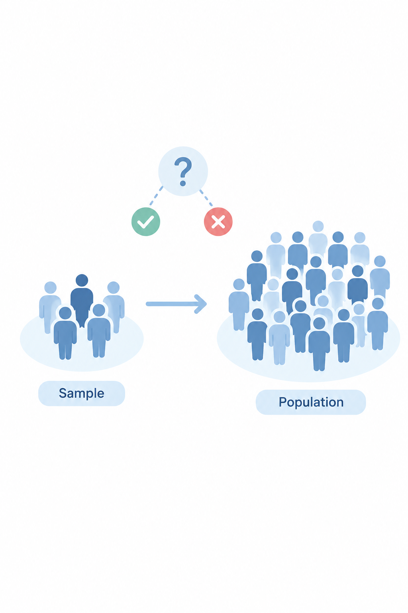
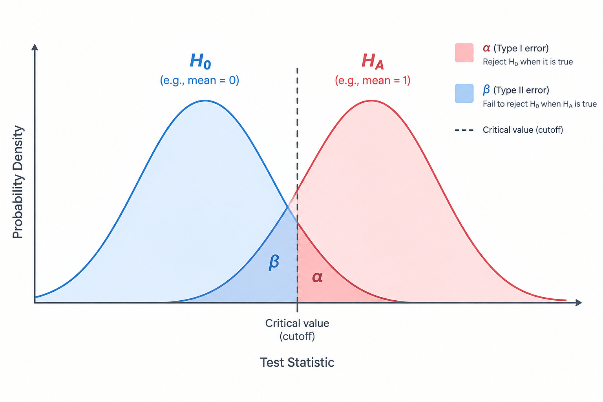

Hypothesis testing is the other major tool of statistical inference (alongside estimation). Instead of just estimating a value, it helps answer a yes-or-no question: is there really a difference or effect, or could what we observed have happened just by chance?

Say a researcher believes the average systolic blood pressure (SBP) in a population is different from 120 mmHg. It's impossible to measure everyone, so a sample is taken instead. Hypothesis testing gives a structured way to use that sample to make a decision about the whole population — while being upfront about the risk of getting it wrong.
Every hypothesis test starts with two opposing statements:
The test never proves either hypothesis is true. It simply decides whether the sample data provides enough evidence to reject H0 in favour of HA.
Depending on what the researcher wants to test, HA can be written in three ways:
To make a decision, the sample data is converted into a single number called the test statistic, using a general formula:
Test statistic = (sample statistic − hypothesized value) / (standard error of the sample statistic)
This number is then compared against a cut-off value, or converted into a probability called the P-value, to make a decision.
The decision rule is simple:
This connects directly to confidence intervals: values inside the confidence interval fall in the "acceptance region" (H0 not rejected), while values outside it fall in the "rejection region" (H0 rejected).
Because a decision is made from a sample rather than the whole population, there's always some chance of error. There are two possible mistakes:
| HA is actually True | H0 is actually True | |
|---|---|---|
| Test says significant | True Positive (Power, 1 − β) | False Positive (Type I Error, α) |
| Test says not significant | False Negative (Type II Error, β) | True Negative (Specificity, 1 − α) |
The illustration below shows how the H0 and HA distributions overlap — this overlap is exactly where these errors come from.

Every hypothesis test follows the same general roadmap:
A sample of 30 adults was studied to test whether the population's mean SBP is 120 mmHg. The sample gave a mean of 125 mmHg and a standard deviation of 15 mmHg (treated as the population value).
Hypotheses (two-tailed): H0: μ = 120, HA: μ ≠ 120
Test statistic:
z = (x̄ − μ0) / (σ/√n) z = (125 − 120) / (15/√30) z = 1.826
Using the P-value approach:
P(Z > 1.826) = 1 − 0.966 = 0.034 Two-tailed P-value = 0.034 × 2 = 0.068
Since 0.068 > 0.05, we do not reject H0.
Using the critical value approach: at α = 0.05 (two-tailed), the critical z-values are −1.96 and 1.96. Since 1.826 falls within this range, we again do not reject H0.
Conclusion: there is not enough evidence to conclude that the population mean SBP differs from 120 mmHg.
The same data can also be tested as a one-tailed hypothesis. For HA: μ > 120, the P-value is 0.034 (< 0.05), so H0 is rejected — there is evidence the mean SBP is greater than 120 mmHg. This shows that the same data can lead to a different decision depending on how the hypothesis is framed, which is why the hypothesis must be decided before looking at the result.
The same logic applies when testing a proportion or percentage instead of a mean — for example, whether the proportion of diabetics in a population is 0.3. The test statistic formula changes slightly:
z = (p̂ − p) / √(p(1 − p) / n)
Everything else — the hypotheses, the decision rule, comparing the P-value to α — works exactly the same way.
Hypothesis testing doesn't tell you the truth — it tells you whether your data provides strong enough evidence to doubt the "no difference" assumption. Always decide your hypothesis and significance level before collecting or analyzing your data, and remember: a "not significant" result doesn't prove H0 is true — it just means there wasn't enough evidence to reject it.
State your hypotheses first. Set your significance level. Let the data decide.